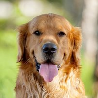
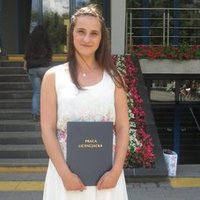

    <section id="ourcopetences">
        <div class="container">
            <div class="row">
                <div class="col-lg-12 text-center">
                    <h2 class="section-heading">O nas</h2>
                    <hr class="primary">
                        <div class="col-md-6 text-center">
                            
                            <h3>Fibi</h3>
                            <hr class="primary">
                            <p class="text-justify">To rodowodowa suczka rasy golden retriever. Dopuszczona do pracy z dziećmi, pod ścisłą opieką i kontrolą  doktora Rafała Korty z kliniki weterynaryjnej ARWET z Wieliczki. Szkolona Metodą Pozytywnych Wzmocnień. Uczestniczka licznych kursów, oraz warsztatów m.in. "Kynoterapia i autyzm", "Kynoterapia i MPD". Posiada certyfikat Psa Terapeuty. Na co dzień wesoła, cierpliwa, oddana towarzyszka życia Moniki Kuc i jej rodziny.</p>
                            <br>
                        </div>
                        <div class="col-md-6 text-center">
                            
                            <h3>Ilona</h3>
                            <hr class="primary text-justify">
                            <p class="text-justify">Ilonka jest kochana! Więcej informacji, więcej informacji, więcej informacji, więcej informacji, więcej informacji, więcej informacji, więcej informacji</p>
                            <br>
                        </div>
                </div>
            </div>
            <div class="text-center">
                <a href="#activities" class="page-scroll btn btn-primary btn-xl sr-button">Więcej o zajęciach z psem!</a>
            </div>
        </div>
    </section>